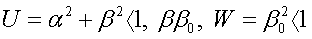
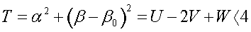
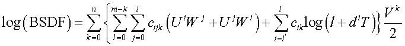
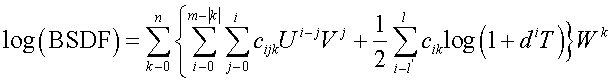
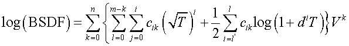

Creates a scatter model based on user-supplied data or polynomial coefficients.
Syntax 1 (polynomial coefficients)
POLYNOMIAL n m [ l [ l' [ d ] ] ] [ PLOT [ a a' ... ] ]
TRINOMIAL
BINOMIAL
c [ c' c" ... ]
Syntax 2 (data fitting)
POLYNOMIAL n m [ l [ l' [ d ] ] ] FIT [ k ] [ options…]
TRINOMIAL SVD
BINOMIAL
data...
:
| Option | Description |
|---|
| n m l l' | summing indices |
| d | logarithmic coefficient |
| c c' c" ... | polynomial coefficients |
| PLOT | plots the model in log(b-bo) and angle space |
| FIT | FIT the BSDF values to the polynomial model |
| k | use every kth value in the FIT (default is to use every BSDF value
entered) |
| SVD | using the singular value decomposition (SVD) algorithm, FIT the BSDF values
to the polynomial model |
| f [f' ...] | either actual BSDF values or the common LOG of the BSDF |
Remarks
- Models scattering described by a general
polynomial of three symmetry variables. In this formalism, scattering from an
isotropic surface must be symmetric with regard to the plane of incidence and
surface normal. Symmetry properties are guaranteed if the BSDF is only a function of
the following variables:
- The α and β are the direction cosine
coordinates of scatter direction; the (0,βo) is the specular direction. Note that
the distance squared (in direction cosines) from specular is given by


- The scattering is modeled by a general
polynomial of 2 or 3 symmetry variables with coefficients c ...
(up to 286); that is,
POLYNOMIAL

TRINOMIAL

BINOMIAL

- If m is entered as a
negative number, then the upper limit of the second sum becomes |m|-k. The
coefficients are entered in the order in which they appear in the previous equations
for the given n m l l'.
- Note that if d is zero,
then all the Lorentzian (log specular) terms vanish.
- If FIT or SVD is entered, ASAP fits the user-supplied BSDF data to the specified
polynomial form. Under the SVD option, a limited number of data
points can be fitted. (See DIMENSIONS command output.)
- By default, every BSDF value entered (above
1.E-9, -9 LOG) is used in the fit. Optionally, only every kth value can be
used.
- The restricted variables used in the BINOMIAL form and the term symmetry in the POLYNOMIAL form assure
that the resulting BSDF exactly obeys reciprocity. The TRINOMIAL form is not
by definition reciprocal but during a FIT it replicates each
input point by interchanging the specular and scatter directions. This in effect
tries to force the resulting BSDF to obey reciprocity.
- If the peak of the BSDF remains nearly
centered on all specular directions (as is the case for relatively smooth or glossy
surfaces) or only in-plane data is available, then try the following Lorentzian-only
fit:
POLYNOMIAL n 0 14 -4 2. FIT
TRINOMIAL
BINOMIAL
where n is less than or equal to the number of non-normal
incident directions in the data. This generates a model with 20(n+1)
coefficients. Confirm that there are at least as many BSDF values (a few times more
is better).
- Another more general technique is to use
$ITER to do a "regressive" fit. For example:
$ITER N 1 5 -5, M 1 5 -5, E
{ MODEL 1
BINOMIAL INT[N] INT[M] SVD
:
data
:
RETURN
$GRAB 'RMS=' E }
- The PLOT option plots
the model (common base 10 logarithm of the BSDF) for up to seven specular angles in
ascending order (default 0, 15, 30, 45, 60, 75, 89.9 degrees). The current PIXELS
setting controls the resolution of these plots in direction cosine space.
- Creates a distribution file name_angle.dis for each of these angles.
- The command argument, MINMAX may be used to set the minimum and maximum values of the BSDF for
this specific model.
- Use with importance area sampling.
POLYNOMIAL
Examples
BINOMIAL
Examples
TRINOMIAL
Examples